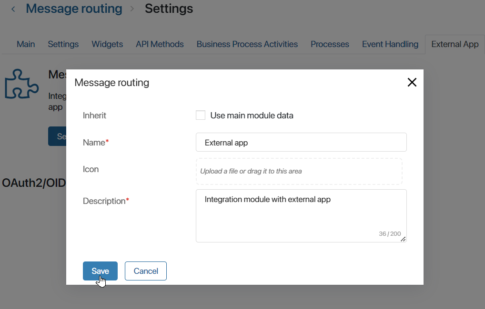
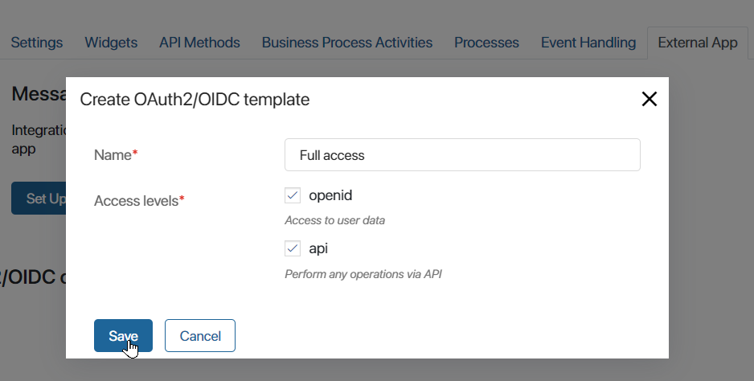
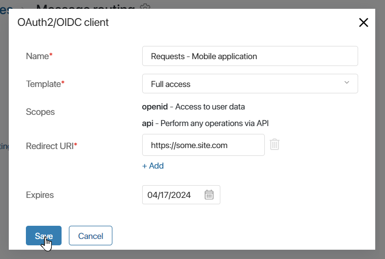
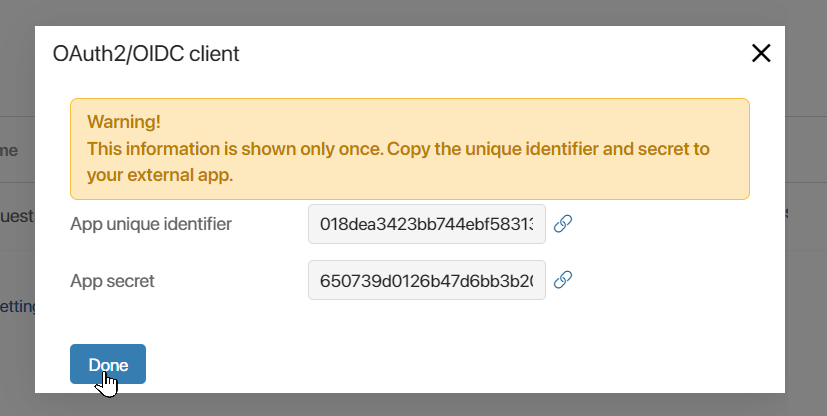

An external app can be connected as part of the module. It provides access to BRIX protected resources for external services using the OAuth2 authorization protocol.
You can grant access to data from BRIX to computer programs, mobile apps, web services, etc. To do this, an external app is created on the BRIX side in the module, an external service is connected during its configuration, and its access level is defined.
Once connected, the data from BRIX can serve as a way of authentication to the external service, as well as a source for access via Web API.
начало внимание
Creating an external app in the module is available in BRIX On-Premises delivery. In the SaaS delivery, the feature will be enabled after the system is upgraded to version 2024.2
Only system administrators can create and setup an external app.
конец внимание
How an external app works
The external app implements the OAuth2 authorization protocol as follows:
- On the BRIX side, the external app is enabled in the module and an OAuth2/OIDC client template is added, which is used to determine the access level to be granted.
- An OAuth2/OIDC client is created, i.e. the data of an external service that is allowed to access BRIX resources is specified.
The service should be developed independently, implementing the client part of the OAuth2 protocol in it. Technical specifications and standards of the OAuth2 protocol can be found in the RFC documentation.
- Connection to BRIX via OAuth2 protocol is performed in an external service. The connection is made using a unique identifier and the secret of the external app, obtained when creating the client.
- After the connection is established, the user allows external service access with the level specified in the external app settings through their account in BRIX.
- An authorization code is generated and passed to the external service. An access token and an refresh token are created using the received authorization code.
- The external service generates and executes requests for BRIX resources using the access token. The refresh token is used to generate a new access token in case of its expiration date.
- The user can check the connection list and interrupt the connection in their profile.
Enable an external app and create an access template
The external app is connected on the BRIX side in the module and serves as a way to integrate the platform and the external service. BRIX connection to the external service is performed via the OAuth2 protocol.
One external app can be created for each user module. At the same time, several services can be connected via an external app in the module.
When configuring an external app, an OAuth2/OIDC client template is created. It specifies the access level for the external service. Access can be granted to user data, Web API, or both.
The created template is selected when connecting an external service. If several services connect to one external app, you can use one customized template to provide the same level of access.
To configure an external app, follow the steps below:
- Go to Administration > Modules and select the custom module you created.
- On the module page, click Settings and click the External App tab.
- On the opened page, select Enable. An external app will be created through which the external service will be connected.
- You can edit the name of the external app. Details are used to identify the external app when the user authorizes access to an external service to perform activities from their account.
To change the name, click Set up. In the opened window, in the Inherit field, uncheck the Use main module data checkbox and set a name, description, and icon for the external app. Save the settings.

- Once the external app is enabled, the OAuth2/OIDC client templates section will appear on the page. Click +Create template and set the access level for the external services to be connected::

- Name*. Specify the name that will be displayed in the list of created templates when an external service is connected;
- Access levels*. Define to which BRIX resources an external service is granted access once it is connected:
- openid. It grants access to user data, which authorizes the service connection to BRIX. The access is required to execute the OpenID protocol. It includes information about ID, company, and email. For example, through an external app with this level of access, you can request email addresses and synchronize accounts from BRIX with user accounts in an external service;
- api. It grants access to performing any operations via WebAPI. For example, through an external app, you can pass requests from an external website and create app items in BRIX.
- Save the client template.
Important: When creating the OAuth2/OIDC client template, consider how the configured external app will be used. Depending on this, select the necessary access levels. When using a connected external service, users will not be able to change the set of provided access levels on their own.
Create an OAuth2/OIDC client and connect it to an external app
After configuring the external app and the OAuth2/OIDC client template, you need to specify the details of the external service that is allowed to access BRIX resources.
To connect an external service, follow the steps below:
- Go to the main page of the user module for which the external app is configured and enable the module.
- Expand the Tokens section that appears on the module’s main page.
- Click +Create OAuth/OIDC client and fill in the details of the external service to be connected:

- Name*. Enter the name of the external service to be connected.
- Template*. Select any OAuth2/OIDC client template created for an external app in the module. Using the specified template, you define which BRIX resources the external service will have access to.
- Scopes. Access level data from the OAuth2/OIDC client template you selected is shown for information.
- Redirect URI*. Specify the URL of the external service, which will be used to return the authorization code from BRIX to the service. It is possible to enter several redirection URIs. To do this, click + Add and fill in the field.
- Expires. Select the validity period of the tokens used to connect the external service and BRIX. After this period expires, work with the service will be terminated. You will be able to create the OAuth2/OIDC client again and issue new tokens.
- Save the settings.
- The window with generated data from the module’s external app will appear, which will be needed to connect to the added OAuth2/OIDC client.
The window is shown only once. You cannot view this data again. Copy and save the App unique identifier and App secret and click Done.

The settings on the BRIX side are completed. Now it is necessary to establish a connection with BRIX in the external service.
Connect an external service to BRIX using the OAuth2 protocol
The connection is performed in an external service using the OAuth2 protocol in any way that depends on the type of service, the set of tools used, the availability of ready-made libraries with solutions, and the current security regulations.
The following is a description of one of the possible ways to establish a connection between an external service and BRIX:
- The App unique identifier and App secret obtained when creating the OAuth2/OIDC client in BRIX are stored in an external service. The data should be specified in the code in a non-explicit way, as this violates security requirements and does not allow them to be changed promptly.
- The external service implements redirection of the user to the BRIX page. On this page, the user authorizes the service to access BRIX resources when the data transmission is started.
Method of redirection realization:
<URL-address_elma365>/api/o/oauth/v2/authorize/client_id=<app_unique_identifier>&redirect_uri=<redirect_link>&scope=<Requested_access_level>&response_type=code&response_mode=query&state=<security_key>
Where:
- <URL-address_BRIX>. The path to the BRIX server, where the external app is enabled in the module and the OAuth2/OIDC client is added.
- <App_unique_identifier>. Identifier value obtained when creating OAuth2/OIDC client in BRIX.
- <Backlink>. The link to switch back to the external service after the user has granted permission to access BRIX resources.
- < Requested_level_access >. Name of the requested access level specified in the OAuth2/OIDC client template: api or openid. If several access levels are configured in the template, each of them is specified.
- <Security_key>. Verification security key, which is an arbitrary string value.
For the user, the page of authorizing access to an external service to execute requests will be displayed. It displays the requested access levels. The user can grant permission or leave the page.
After access is granted, the following steps should be followed:
- On the path from the <Backlink> value, the external service accepts incoming data.
- The authorization code is extracted from the code field received in the response. It is used to obtain an access token and an update token.
- To perform these actions, it is necessary to:
- Write a script that sends a POST request to BRIX:
<URL-address_elma365>/api/o/oauth/v2/token
- Add value to the header:
Content-Type:application/x-www-form-urlencoded.
- In the body, pass:
grant_type=authorization_code&code=<authorization_code>&client_id=<app_unique_identifier>&client_secret=<app_secret>&redirect_uri=<backlink>
Where:
- <Authorization_code>. The authorization code obtained in the previous activity.
- <App_unique_identifier>. The value of the external app identifier from BRIX.
- <App_secret>. The value of the external app secret from BRIX.
- <Backlink>. Backlink to the external service.
- Полученный json-ответ содержит:
- In the access_token field—access token.
- In the refresh_token field—refresh token.
- In the id_token field—data about the user in the form of a JSON Web Token (JWT) string. It will be returned if openid access level is specified.
- Having received the access token, the external service requests the necessary resources from BRIX via the interface implemented for this purpose.
When an access token expires, the external service sends a request, which contains an update token, to obtain a new access token.
- To update the tokens, it is necessary to:
- Implement sending
POSTrequest to BRIX:
<URL-address_elma365>/api/o/oauth/v2/token
- Add value to the header:
Content-Type:application/x-www-form-urlencoded
- In the body, pass:
grant_type=refresh_token&refresh_token=<refresh_token>&client_id=<app_unique_identifier>&client_secret=<app_secret>
Where:
- < Refresh_token>. Refresh token received together with the access token.
- <App_unique_identifier>. The value of the external app identifier from BRIX obtained earlier in secrets.
- <App_secret>. The value of the external app secret from BRIX.
The received json response will contain a new access token in the access_token field and a new refresh token in the refresh_token field.
Features of data transmission
Familiarize yourself with the features of data transmission at different levels of external service access to BRIX resources:
- Access to Web API. Access token received for api level is used when executing requests. For more details on the token usage principle, read BRIX public API.
- Access to user’s data. Requests are made by openid level access token. The id_token field contains serialized data according to the JSON Web Token (JWT) standard, containing information about the user: identifier, email address, and company name. To decode the token, you can use ready-made solutions for working with JWT or implement your own parsing algorithm.
Validity period of connection tokens
The authorization code and access and update tokens have a limited validity period:
- Authorization code. The validity period for one request is 10 minutes. It is used once to obtain other tokens. After that the code is considered invalid, and further requests using it are rejected.
- Access token. The validity period is 10 minutes. The token allows multiple requests during this time. After the expiration date, it will be unavailable. A new access token is requested using an update token.
- Refresh token. The validity period is 14 days. After this time has expired, new access and update tokens must be obtained. To do this, the user must run the authorization process again and allow an external service to access BRIX.
View a list of granted accesses
If a connection to BRIX is implemented in an external service, the user can run data transmission. After that, the user is redirected to the page allowing the service to access BRIX resources.
All granted permissions and established connections are recorded in BRIX. The user can view the list of granted accesses and revoke them in the profile settings, on the External Apps tab.
Read more about it in the User profile settings article.
Found a typo? Select it and press Ctrl+Enter to send us feedback